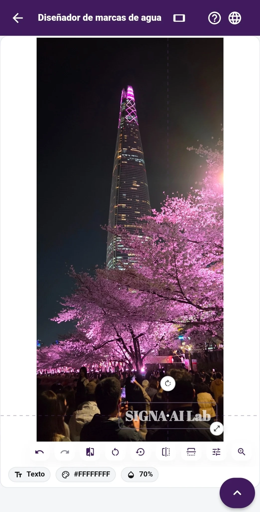

01 · MARCAS DE AGUA
Tu nombre donde mejor quede
Pon la misma marca de agua en hasta 12 fotos a la vez. Ajusta su posición solo donde lo pida el encuadre, cambia tamaño y opacidad, y guarda tu diseño para la próxima entrega. Puedes trabajar con fotos verticales y horizontales.
Fotos verticales u horizontales · Hasta 12 a la vez · Ajuste por foto · Diseños guardados · Fuentes extra con Pro
Cómo elegir una marca de agua →